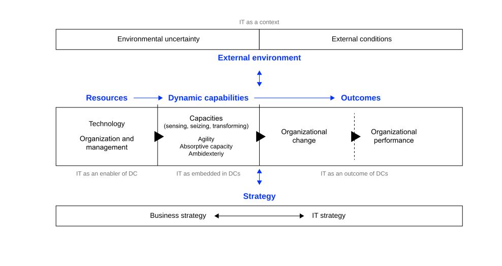
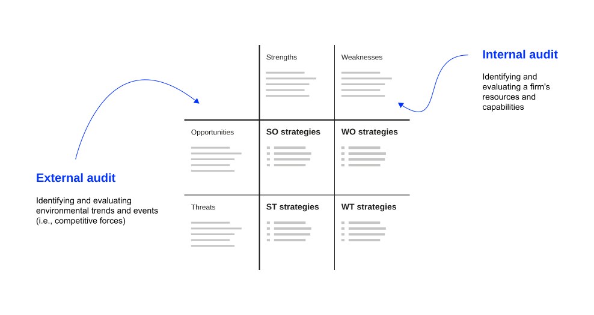

Learning Objectives
After this section, you should have a solid understanding of
- the nature and purpose of an internal audit in formulating strategies;
- major internal factors that impact competitive advantage;
- the role of organizational culture as a resource that is difficult to imitate;
- the tenets of the resource-based view and dynamic capabilities;
- the construction and application of the Strengths-Weaknesses-Opportunities-Threats (SWOT) matrix;
- how internal resources create sustainable competitive advantage.
Internal Perspective
Internal Audit
The internal audit focuses on identifying and evaluating a firm’s strengths and weaknesses in the functional areas of business, including management, marketing, finance, accounting, production/operations, research and development (R&D), and management of IT/the digital (David & David, 2016).
All organizations have strengths and weaknesses in the functional areas of business. No enterprise is equally strong or weak in all areas. Internal strengths and weaknesses, coupled with external opportunities and threats provide the basics for strategic planning. Objectives and strategies are established with the intention of capitalizing on internal strengths and overcoming weaknesses.
Key Resources
Key internal areas/resources an internal assessment should focus on:
Tangible resources
- Financial resources: the firm’s financial strength, including cash reserves, profitability, and access to capital
- Physical assets: the firm’s physical assets such as manufacturing facilities, real estate, equipment, and inventory
Intangible resources
- Intellectual property: assets including patents, trademarks, copyrights, and proprietary technology
- Brands and reputation: brand equity and reputation of the firm within its industry and among consumers
- Human capital: the skills, knowledge, and expertise of the firm’s employees, including leadership and talent management
Organizational capabilities:
- Innovation and R&D: the firm’s capacity for innovation, research and development capabilities, and the ability to bring new products or services to market
- Operational efficiency: the efficiency of the firm’s operational processes, supply chain management, and cost control measures
- Marketing and sales: the firm’s marketing strategies, customer relationships, and sales capabilities
Competitive assets:
- Strategic partnerships: strategic alliances, partnerships, and collaborations that provide unique competitive advantages
- Exclusive contracts: exclusive contracts or agreements that offer preferential treatment or access to key resources
- Market position: the firm’s position within its target markets and industry, including market share and market dominance
Knowledge management:
- Knowledge repository: the firm’s ability to capture, share, and apply knowledge effectively across the organization
- Learning organization: culture of continuous learning, adaptation, and knowledge creation
Strategic flexibility:
- Adaptability: the firm’s ability to adapt to changing market conditions, competitive threats, and external disruptions
- Resource mobility: ability to reallocate resources strategically to exploit emerging opportunities or address weaknesses
Technological capabilities:
- Information systems: the quality and effectiveness of the firm’s information systems, data analytics capabilities, and technology infrastructure
- Digital capabilities: the firm’s readiness to leverage digital technologies for competitive advantage
Culture and values:
- Corporate culture: the organizational culture and values that influence decision-making, employee behavior, and innovation
- Shared assumptions: the tacit beliefs that guide behavior where no rule or process applies
- Ethical reputation: the firm’s ethical practices, corporate social responsibility, and its impact on reputation
Culture as Resource
Culture eats strategy for breakfast. Widely attributed to Peter Drucker; no documented source exists
The sentence is widely attributed to Peter Drucker. The Drucker Institute has confirmed that he neither wrote nor said it; the earliest close match appears in a trade magazine in September 2000, and Mark Fields popularized the line at Ford in the early 2000s. Drucker’s documented claim is narrower: corporate culture, “no matter how defined, is singularly persistent” (Drucker, 1991). Persistence matters for strategy in two ways. It limits how fast a firm can change direction, and it makes culture costly for competitors to replicate.
As discussed, strategy as perspective describes strategy as an ingrained way of perceiving the world, a collective intuition shared by members of the organization, which Mintzberg (1987) notes can also be called culture or ideology. The cultural school of strategy formation treats strategy as a social process grounded in collective culture and shared belief (Mintzberg, 2014). This unit places culture inside the internal audit and evaluates it like any other resource.
Three levels of culture
Schein (2010) distinguishes three levels:
- Artifacts: visible structures, processes, and behaviors, including office design, rituals, dress, and slogans. Observable by anyone, including competitors.
- Espoused values: stated strategies, goals, and philosophies, usually published in value statements and career pages.
- Basic underlying assumptions: unconscious, taken-for-granted beliefs that determine actual behavior. Rarely articulated, often not consciously known to members.
Basic underlying assumptions carry the inimitability. Competitors can copy artifacts and value statements within months. Underlying assumptions form through shared history and cannot be purchased.
National culture is a different level of analysis (Hofstede et al., 2010); firms in the same country develop markedly different organizational cultures.
Strategic consequences
- An organization’s culture influences how employees behave, make decisions, and interact with one another. If a strategic plan contradicts cultural norms or values, employees are likely to prioritize cultural consistency over strategic alignment.
- Culture can either enable or constrain the execution of strategic initiatives. A supportive culture aligns with the strategy, fosters commitment, and drives performance. Conversely, a culture that resists change or lacks alignment can hinder even the most well-conceived strategy.
- Leaders play a crucial role in shaping and aligning culture with strategy. Effective leaders understand the culture’s impact and work to foster a culture that supports the strategic vision.
- Successful organizations integrate culture and strategy. They develop strategies that not only consider external market dynamics but also respect and leverage the existing culture.
Implications (David & David, 2016):
- Strategies that require fewer cultural changes may be more attractive because extensive changes can take considerable time and effort
- Political maneuvering consumes valuable time, subverts organizational objectives, diverts human energy, and results in the loss of some valuable employees
- Political biases and personal preferences get unduly embedded in strategy choice decisions
Resource-Based View
Key Assumptions
The RBV contends that internal resources are critical for achieving and sustaining competitive advantage, even more important than the environment.
Understanding the sources of competitive advantages calls for an analysis of not only the company’s environment (opportunities and threats), but its own/internal strengths and weaknesses as well (Barney, 1995).
This point is clearly highlighted when we consider the success achieved by companies such as WalMart, Southwest Airlines and Nucor Steel, despite unfavorable environments.
A firm’s internal attributes, its resources and capabilities, include all the financial, physical, human and organisational assets used by a firm to develop, manufacture and deliver products/services to its customers.
Resources and capabilities that cannot be readily matched by competitors are referred to as distinctive competencies.
VRIO Framework
The Question of Value
Resources must provide value to the organization and enable it to exploit opportunities or defend against threats. They should contribute to the firm’s ability to create or deliver products/services, reduce costs, or increase revenues (Barney, 1995).
Managers need to check if the firm’s resources and capabilities enable it to exploit opportunities and/or neutralize threats:
- Managers should be able to evaluate/distinguish resources and capabilities
- Managers should identify resources and capabilities that add value from those that do not
- Managers should identify resources and capabilities that may be less valuable in the future due to changes in environmental factors
- Managers should identify resources and capabilities that are valuable because they can be applied in new ways
The Question of Rareness
Resources should be rare or uncommon in the industry or among competitors. If a resource is widely available or easily replicable, it is less likely to provide a competitive advantage (Barney, 1995).
Therefore, managers need to assess the resources and capabilities that are considered valuable based on how many competing companies already have them:
- If a valuable resource or capability is controlled by several competing firms, it forms a source of competitive parity
- Resources or capabilities that are valuable and rare among competing firms form sources of competitive advantage
The Question of Imitability
Resources must be difficult for competitors to imitate or replicate. This can be due to factors like unique capabilities, proprietary knowledge, complex relationships, or a combination of elements that are hard to duplicate. In addition, there should be no readily available substitutes (Barney, 1995).
Thus, managers need to check if firms without a resource or capability face a cost disadvantage in obtaining it:
- If a firm possesses valuable and rare resources or capabilities, it can gain at least a temporary competitive advantage
- If competing firms face a cost disadvantage in trying to imitate these resources/capabilities, then it leads to a sustained competitive advantage
- Imitation can occur through duplication or substitution; socially complex resources are much more difficult to imitate than physically complex resources. Organizational culture is the standard example (see Culture Through VRIO)
The Question of Organization
The organization and management of these resources play a crucial role in determining whether they can truly provide sustainable competitive advantages. Even if a resource possesses the VRIN attributes, it must be strategically deployed within the organization (Barney, 1995).
Thus strategic management needs to evaluate if a firm is organised to exploit the full competitive potential of its resources and capabilities:
- A firm must be appropriately organised, in order to fully realise the potential for competitive advantage.
- The firm’s complementary resources (formal reporting structure, management control systems or compensation policies) are relevant for a firm to realize competitive advantage.
- To create sustained competitive advantage, managers must look inside their firms for valuable, rare and costly-to-imitate resources, and then exploit them through proper organisation.
Limits to Competition
Peteraf (1993) uses the terms ex-post and ex-ante to describe different types of limits to competition:
Ex-post limits to competition are barriers that protect competitive advantage after it’s been established. They preserve the sustainability of rents (profits) by making it difficult for competitors to imitate or substitute resources and by preventing competitive forces from eroding the firm’s advantage. Examples are patents, complex social relationships, and causal ambiguity that make it hard for competitors to replicate a successful firm’s capabilities. Culture is a frequent source of the latter two: competitors observe what a firm does without identifying which underlying assumptions make it work (see Culture as Resource).
Example: A pharmaceutical company develops a new drug. Ex-post limits include patents making it legally difficult for competitors to produce the same drug, proprietary knowledge about formulation and manufacturing, strong brand loyalty among consumers and healthcare providers, and rigorous regulatory approvals that competitors would need to achieve.
Ex-ante limits to competition refer to barriers that exist before a firm establishes a superior position. These limits ensure that costs don’t offset the potential benefits of a strategic position. They limit competition for a position before any firm has established it, prevent the costs of acquiring resources from consuming all future profits.
Example: A tech company acquiring a patent for groundbreaking technology. Ex-ante limits include information asymmetry (better information about patent value), first-mover advantage (acting quickly before others), and unique complementary assets that make the patent more valuable to them than to competitors.
Together, these limits ensure that firms can acquire resources at costs below their ultimate value (ex-ante) and maintain their competitive advantage once established (ex-post).
Culture X VRIO
Applying Barney (1995) to culture turns a general claim about its importance into a testable one.
- Value: Culture determines behavior in situations no rule anticipates, which is where most operational decisions are actually made.
- Rareness: Underlying assumptions form through a specific history of shared problem-solving, so two firms in the same industry rarely hold the same ones.
- Imitability: The three levels differ sharply here. Artifacts and espoused values are published and copied within months; basic underlying assumptions cannot be bought, and competitors frequently cannot identify which of them produce the observed performance. This is exactly the causal ambiguity Peteraf (1993) lists among ex-post limits.
- Organization: Culture delivers advantage only when hiring, reward, and promotion systems reproduce it. A stated value nobody is promoted for is an artifact.
Culture also shows why the ex-ante and ex-post distinction matters. No firm bids for a culture on an open market, so there is no acquisition cost to offset the rents, an ex-ante limit by default, while social complexity and causal ambiguity supply the ex-post limits.
The limits are symmetric. The same persistence that blocks imitation blocks redirection, which is why strategies requiring extensive cultural change are expensive (David & David, 2016).
Dynamic Capabilities
Overview
Dynamic capabilities refer to a firm’s ability to integrate, build, and reconfigure internal and external resources to address rapidly changing environments (Teece et al., 1997).
RBV emphasizes the assessment of internal resources and capabilities to identify those that can provide a sustainable competitive advantage. Dynamic capabilities play a critical role in adapting and reconfiguring these resources over time to maintain their competitiveness.
By developing dynamic capabilities, organizations can better navigate change and respond effectively to new challenges. They are thus a source of sustainable competitive advantage, allowing firms to continuously renew and adapt their strategies.
Core Elements
Teece et al. (1997) concept of dynamic capabilities essentially says that what matters for business is corporate agility: the capacity to (1) sense and shape opportunities and threats, (2) seize opportunities, and (3) maintain competitiveness through enhancing, combining, protecting, and, when necessary, reconfiguring the business enterprise’s intangible and tangible assets.
Sensing: Dynamic capabilities begin with the ability to sense changes in the external environment, such as shifts in customer preferences or emerging market trends. This requires organizations to collect and analyze data from both external and internal sources.
Seizing: Once an opportunity is identified, dynamic capabilities involve the rapid and efficient allocation of resources to exploit that opportunity. This requires the organization to be agile and responsive, ensuring that resources are allocated swiftly to capitalize on emerging opportunities.
Reconfiguring: In dynamic environments, organizations must be able to adapt and reconfigure their internal resources, such as talent and technology. Dynamic capabilities often necessitate changes in the organization’s structure, processes, and systems to support strategic adaptation.
Dynamic capabilities reflect the evolutionary fitness of organizations, which describes how well an organization can adapt to its environment and maintain competitive advantage (Steininger et al., 2022).
Example: Apple Inc.
Apple Inc. provides a compelling illustration of dynamic capabilities in action:
- Sensing: Apple constantly monitors consumer trends, technological advancements, and shifts in the global market. They sense changes in customer preferences, such as the demand for smartphones, wearables, and digital services.
- Seizing: When Apple sensed the growing demand for smartphones, it seized the opportunity by launching the iPhone in 2007. The rapid development and launch a service ecosystem and new iPhone models showcase their ability to efficiently capture opportunities.
- Reconfiguring: The shift from traditional Mac computers to mobile devices required significant reconfiguration of their manufacturing and supply chain processes. Apple’s app ecosystem and digital services are examples of reconfigured capabilities that add value to their products.
Apple’s success can be attributed in part to its dynamic capabilities, allowing the company to sense changes in the market, seize opportunities like the smartphone revolution, and reconfigure its resources and capabilities to maintain a competitive edge.
Excursus: Dynamic Capabilities and IS
IT plays multiple roles in dynamic capabilities: as enabler, embedded component, outcome, and context (Steininger et al., 2022).

IT as context: IT shapes the context within which dynamic capabilities are developed and deployed. The digital environment creates a context that necessitates the development of dynamic capabilities to remain competitive. Environmental uncertainty and industry conditions are critical contextual factors that shape how organizations develop and deploy their capabilities.
IT as an enabler of dynamic capabilities: IT provides the tools and infrastructure necessary for developing dynamic capabilities. Advanced data analytics and cloud computing enable organizations to quickly process and analyze large volumes of data, facilitating better decision-making and faster responses to market changes.
IT embedded in dynamic capabilities: IT is integrated into the very fabric of dynamic capabilities. IT systems are embedded in processes such as supply chain management and customer relationship management, enhancing the organization’s ability to sense and respond to changes.
IT as an outcome of dynamic capabilities: Dynamic capabilities can lead to the development and enhancement of IT capabilities. An organization that excels in innovation may develop new IT solutions or improve existing ones as a result of its dynamic capabilities.
Key theoretical insight
This diagram illustrates that IT’s relationship to dynamic capabilities is multifaceted:
- IT isn’t simply a “tool” or “resource”; it can play multiple roles simultaneously
- IT enables capabilities (left side), but capabilities also create IT (right side)
- From external factor → tool → component → output shows deepening IT-organization fusion
Practical implications
- Don’t think of IT as just infrastructure (context/enabler view)
- Recognize when IT becomes inseparable from your competitive advantage (embedded view)
- Understand that developing new IT capabilities is itself a strategic outcome (outcome view)
SWOT Framework
Overview
The environment reveals external opportunities and threats. The resource-based view emphasizes the significance of internal resources and capabilities in achieving competitive advantage. Dynamic capabilities represent an organization’s ability to adapt and reconfigure its resource base over time.
When combined, these concepts offer a comprehensive framework for strategic management. The SWOT framework offers a starting point to develop and think through a strategy, particularly four types of strategies:
- SO strategies (strengths-opportunities, matching): using a firm’s internal strengths to take advantage of external opportunities
- WO strategies (weaknesses-opportunities, conversion): improving internal weaknesses by taking advantage of external opportunities
- ST strategies (strengths-threats, neutralization): using a firm’s strengths to avoid or reduce the impact of external threats
- WT strategies (weaknesses-threats, defense): defensive tactics directed at reducing internal weakness and avoiding external threats
SWOT Matrix Structure

SO Strategies (Matching): use internal strengths to take advantage of external opportunities
- Leverage core competencies to exploit market opportunities
- Build on competitive advantages to capture growth potential
WO Strategies (Conversion): improve internal weaknesses by taking advantage of external opportunities
- Address capability gaps to pursue opportunities
- Use market opportunities to justify investments in weak areas
ST Strategies (Neutralization): use internal strengths to avoid or reduce impact of external threats
- Leverage competitive advantages to defend against threats
- Apply strengths to minimize vulnerability to external risks
WT Strategies (Defense): minimize internal weaknesses and avoid external threats
- Defensive tactics to reduce exposure to threats
- Consider divestiture or strategic restructuring
Process for SWOT Development
Steps in using the SWOT framework:
- Perform an external audit to identify opportunities and threats
- Perform an internal audit to identify strengths and weaknesses
- Allocate internal and external factors in the matrix
- Review whether allocation to (one) box is correct
- Structure the points in each box (i.e. group under headline, structure in sub-levels)
- Review potential relevance (and disregard as appropriate)
- Test whether statement is true and quantify where possible
- Review, prioritize
- Develop strategies based on the analysis
The SWOT development process ensures systematic analysis:
- External and internal audits provide comprehensive factor identification
- Proper allocation ensures factors are placed in correct categories
- Structuring and prioritizing focuses attention on most important factors
- Testing and quantification adds rigor to the analysis
- Strategy development translates analysis into actionable initiatives
Key questions for strategy development:
- How to leverage strengths to exploit opportunities?
- How to address weaknesses to mitigate threats?
- How to use strengths to neutralize threats?
- How to convert weaknesses into strengths using opportunities?
Key Takeaways
- Internal audit focuses on identifying strengths and weaknesses across functional business areas
- Organizational culture is socially complex and persistent, which makes it both a source of inimitability and a constraint on strategy execution
- Resource-based view emphasizes that internal resources are more critical than environment for competitive advantage
- VRIO framework provides systematic approach to evaluating resources for sustainable competitive advantage
- Dynamic capabilities enable firms to sense, seize, and transform in rapidly changing environments
- SWOT analysis provides comprehensive framework integrating internal and external factors
- Limits to competition both ex-ante and ex-post are necessary for sustaining competitive advantages
Review and Consolidation
The following questions are designed to review and consolidate what you have learned and are a good starting point for preparing for the exam.
- Do you agree or disagree with the resource-based view (RBV) theorists that internal resources are more important for a firm than external factors in achieving and sustaining competitive advantage? Explain your and their position.
- What makes a resource valuable to a company? Give specific examples.
- Explain the concept of resource heterogeneity. Why is it considered a crucial factor in determining competitive advantage according to the RBV?
- How does resource immobility relate to the sustainability of competitive advantage?
- Explain why organizational culture can qualify as a VRIO resource. Which of Schein’s three levels is hardest for a competitor to imitate, and why?
- Describe a strategy that failed because it conflicted with the prevailing culture. Which underlying assumptions blocked it, and what would changing them have cost?
- Mintzberg describes strategy as perspective, a collective intuition shared by members of an organization. Compare that account of culture with treating culture as an auditable internal resource.
- How do dynamic capabilities enable firms to adapt and innovate over time?
- What is the relationship between a firm’s resources, competitive advantage, and value creation for customers?
- How does the RBV contribute to our understanding of why some firms consistently outperform others in the marketplace?
- Give examples for the different ways IT/IS relates to dynamic capabilities.
- Listen to the decoder episode featuring Josh Miller, the cofounder and CEO of The Browser Company, and subsequently create a SWOT matrix based on the insights provided in the interview.
- Why do you think the SWOT Matrix is the most widely used of all strategy matrices?
- What other strategy matrices do you know? Name and explain one and compare it to the SWOT matrix.
- Think of limitations of the SWOT matrix and related analysis. Name three limitations and relate them to the concept of dynamic capabilities.
- Perform a SWOT analysis for Spotify [Netflix, OpenAI, NVidia …].
Homework
Read Mintzberg (1978) and make notes on following questions:
- Why and how does Mintzberg challenge the prevailing view of strategic planning as the primary approach to strategy formation?
- How does Mintzberg propose to think of strategy formation instead?
- Which patterns of strategy formation has Mintzberg identified?
- What practical implications can you draw from Mintzberg’s insights for strategic management practices?
Reading tip: Create a concept map while reading to visualize the relationships between different patterns and concepts.
Do some casual research on Netflix’s strategic journey.
Literature
Footnotes
Case facts from Warum diese Chipfirma niemand nachbauen kann by Jan-Keno Janssen, c’t/heise online, 25.09.2026 (in German).↩︎